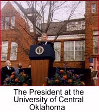

 On the Horizon
As we head into the final days
of the campaign, we need your help
energizing your community to
GET OUT THE VOTE!Call the Clinton/Gore office number
below to volunteer.Oklahoma Highlights
University of Central Oklahoma student
Holly Mangam describes the President's visit
in the 7th edition ofClinton-Gore '96 Headquarters
2726 N. Oklahoma St.
Oklahoma City, OK 73105Phone: 405-524-9996
Fax: 405-524-4386
State Director/Press Secretary: Elisa Dozono
Oklahoma Democratic Coordinated Campaign
1304 North 9th
Purcell, OK 73080Phone: 405-239-2700
Fax: 405-236-8009
Paid for by Clinton/Gore ’96 General Election Committee, Inc.